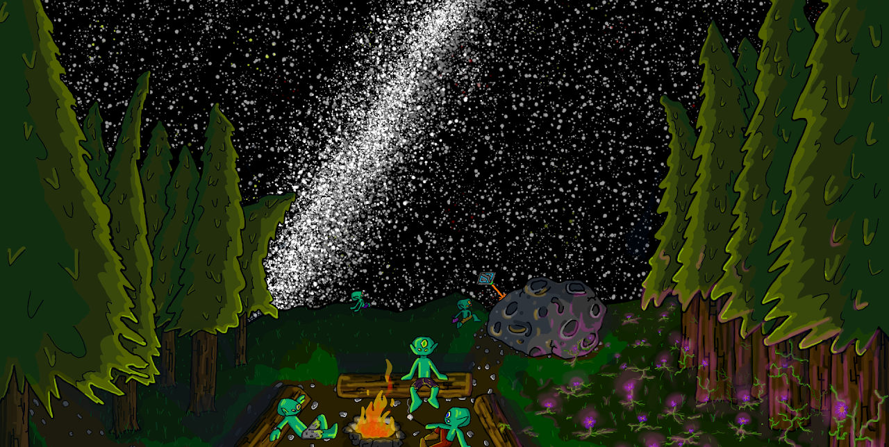
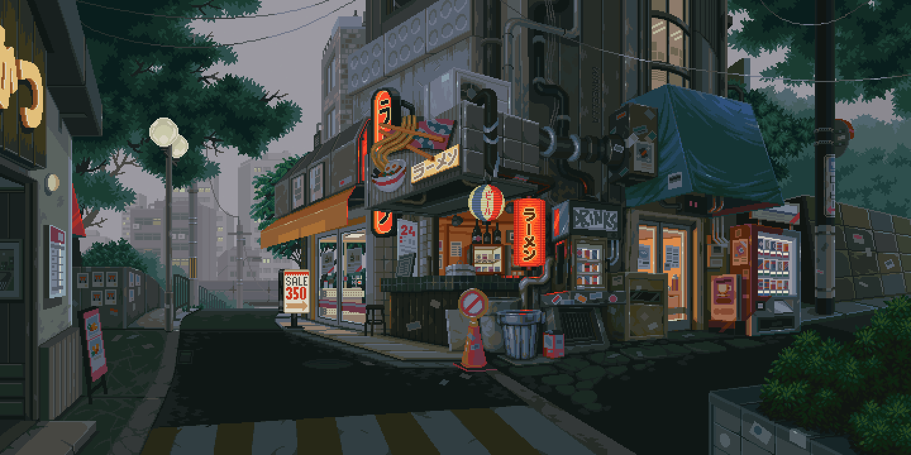

Enjoy just some of the pieces I have done because I like to draw sometimes. I have lost of lot of work over the years due to my terrible brain forgetting to save things.
My Personal Favorites!
Favorite Pieces
Some of my favorite pieces I have drawn.
You may find them on other parts of my website, but I wanted them to be shown here for display. Please have fun!
A few pieces I really like
More of my favorite pieces
Some drawings deserve a spot where people can actually see them. These are a few of mine!


Jinx Listens
Listening to some soft jazz, Jinx sits and ponders what the future has for her.

The séance
A group of highschoolers setting out to contact their missing friend. The truth will be discovered, and honer will be brought to their friends memory.

Resting by the fire
After crashing, the team had to work on gathering supplies to make it back. Really though, they were not in a rush.

Rainy Nights in Tokyo
A friend had an image that he really loved, and used it as his new theme. He just thought a few changes would go a long way. He wanted some rain, mood lighting, and a little more life to it. So looking at this incredible piece from the artist Manojooj here: https://themes.vivaldi.net/users/ManoJooJ (Original piece) I worked to add a little more to the piece, and above is the final product.